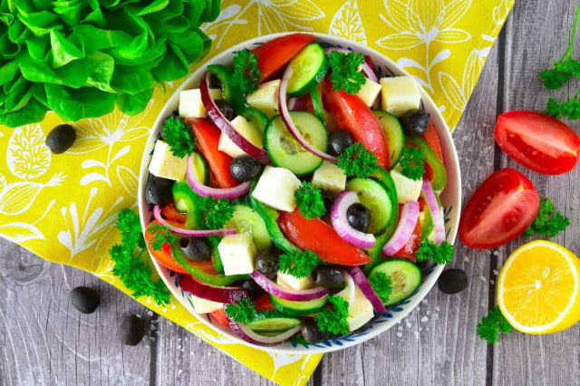
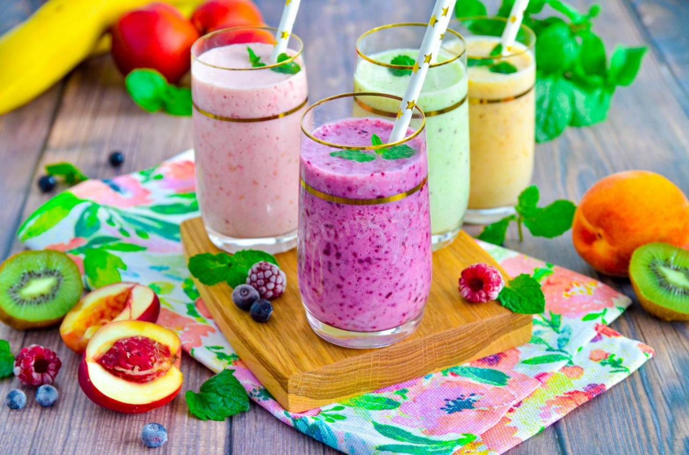

Ингредиенты:
- Огурцы — 2 шт
- Помидоры — 2 шт
- Болгарский перец — 1 шт
- Фета — 100 г
- Маслины — 50 г
- Оливковое масло, соль, орегано
Приготовление:
Нарежьте овощи крупными кусками, добавьте фету и маслины, заправьте маслом и посыпьте орегано.
Время приготовления: 15 минут

Нарежьте овощи крупными кусками, добавьте фету и маслины, заправьте маслом и посыпьте орегано.
Время приготовления: 5 минут

Смешайте все ингредиенты в блендере до однородности. Отличный перекус!